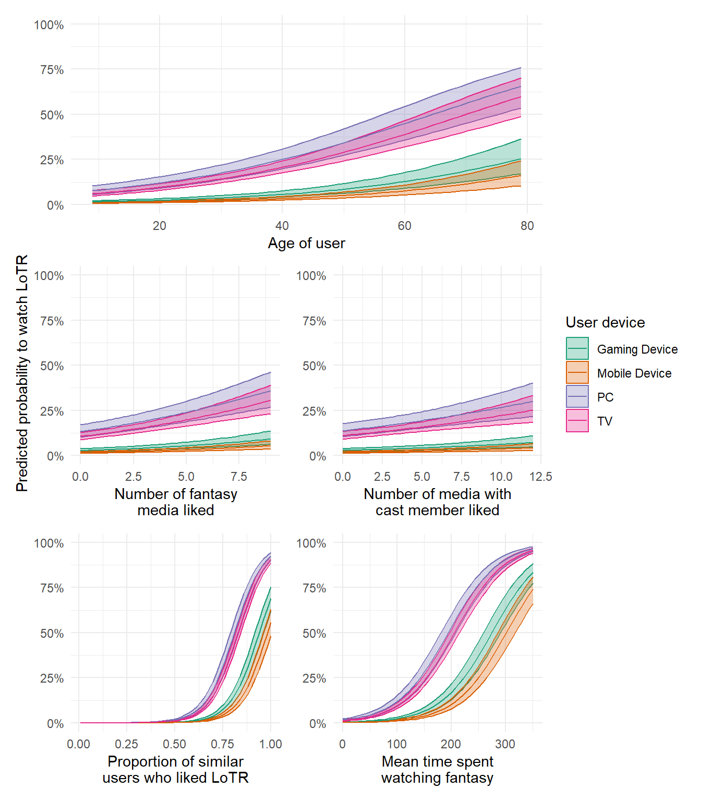

Day 3: Bernoulli GLMs
Bernoulli GLM - Predicting if Netflix users will watch Lord of the Rings: The Fellowship of the Ring
For the GLM exercises, we’ll use the workflow we suggested in the first GLM overview lecture as a template, specifically:
Know your research question!
Think about your response variable (stochastic).
Think about the process behind the data (deterministic).
Understand the data that you’ve collected (plot it!)
Combine into a model that can answer your question.
Fit the model.
Check your assumption(s).
Answer your question.
1. Know your research question!
For this final exercise, we’ll do something that’s, hopefully, a bit fun and silly. We’re going to work with a relatively small Netflix dataset, where we’re going to try and predict if a user will will watch Lord of the Rings: The Fellowship of the Ring. I will admit to a number of ulterior motivations in ending the course using this dataset.
There is a common misconception that Machine Learning is for predicting and Statistics is for understanding. I want to show that this distinction is meaningless. In truth, machine learning is, in general, statistics performed (or in some cases developed) by computer scientists. For example, the GLMs you’ve learned to use on this course are often called Supervised Machine Learning Models in Machine Learning courses. The distinction between the two methods largely comes down to who is teaching you (and who taught them). Indeed, some “classic” machine learning methods such as Random Forest models are just GLMs with a few extra bells and whistles in much the same way that some “classic” statistical methods such as Mixed Effects models are just GLMs with a few extra bells and whistles.
Because people tend to think of there being some sort of distinction between Machine Learning and Statistics, it can result in people, such as yourselves, not realising they have skill-sets that lots of employers (including non-academic) are looking for. By using this Netflix example I want to show that, having taken this course, your employment options have broadened.
In the final and corresponding \(Bernoulli\) GLM lecture, I showed an example where AIC fails miserably. In doing so, I’m at risk of leaving you with the impression that AIC (and also other forms of model and variable selection) should never be used. Therefore, in this exercise we’re going to use an example where AIC is wonderfully well suited for helping achieve our objective. It will also give me an opportunity to talk a little more about how AIC works, and also the controversy and differing opinions on AIC.
I really like Lord of the Rings.
While this exercise takes on an industry focus, this is not specific to \(Bernoulli\) GLMs. Indeed, like all GLMs and LMs, \(Bernoulli\) GLMs can be used for any of the three broad purposes we described in the first lecture: Causal inference, prediction or description.
The data you’ve been provided includes various information that Netflix has on hand about their users, for the purposes of predicting if a user will watch Lord of the Rings (LoTR). To do so, our response variable if whether not a given viewer watched LoTR (1) or not (0).
The covariates we have are:
lotr- if that user watched LoTR on Netflixpremium- if the user has Netflix Premium or Standardage- the age of the user at the time of data collectiongenre_likes- how many fantasy films/shows the user had previously likedactor_likes- how many films/shows the user had previously liked that included cast members of LoTRsimilar_user_ratins- what lotr of “similar” users had liked LoTR (“similar” is undefined)mean_time_genre- what is the average length of time users watch fantasy mediauser_time- Time of day for user at time of data collection (Morning,AfternoonandEvening)user_day- Day of week for user at time of data collection (Monday,Tuesday, etc.)user_device- Type of device user was logged in from (TV,PC,Mobile DeviceandGaming Device)fam_members- Number of family member accounts tied to subscriptioncountry- Country of subscription
As concisely as possible, write down the research question that can be answered with our analysis, keeping in mind that Netflix are not interested in understanding causation or writing a scientific paper, they want predictive power.
# Using the available covariates, can Lord of the Rings engagement be predicted
# and can we make this prediction as efficient as possible?
2. Think about your response variable (the stochastic element).
From the information provided in the description above, we can determine that a \(Bernoulli\) distribution is a sensible one to use here; our data is 0 (user did not watch LoTR) or 1 (user did watch LoTR). Our stochastic element of the model would therefore be:
\(y_i \sim Bernoulli(p_i)\)
Where \(y\) is if user \(i\) watched LoTR or not, generated according to a \(Bernoulli\) distribution, with probability \(p\).
3. Think about the process behind the data (the deterministic element).
Just like the drinking coffee example from the first lecture, the Data Generating Process (DGP) for whether or not someone watches a particular film on Netflix is going to be incredibly complex. A nuance here is that our objective for this analysis, and intended use, is prediction. When that’s the case, we can be a bit more relaxed about understanding the deep complexity underlying the DGP and instead feel relatively comfortable adding any and all covariates for which we have data, with an important caveat. We must be confident that we are not including any covariates which have no conceivable connection to our response (i.e. variables which may be spuriously correlated, that is correlated by pure chance). For example, we wouldn’t want to include the number of springbok observed by that day in Kruger National Park as a covariate, because it shouldn’t give us any predictive power. The only way it would is if we’re unlucky; it may be correlated (by pure chance) with LoTR viewership and thus we may think it helps us do predictions (see this website for fun examples of such spurious correlations).
In this dataset, Netflix have collected a total of 11 covariates with the explicit purpose of predicting viewership, so we can be confident that at least someone thinks these variables might give us some predictive power and aren’t spurious correlations. That said, it is still important to convince yourself of this.
Our model will, nevertheless, still have a deterministic equation
that describes the associations that we’re going to exploit to make
predictions. Given that we have 11 covariates that we could include in
the model, would be cruel to task you with writing the equation out in
full for a model that contained all of these covariates. Instead, assume
our model was lotr ~ age + user_time. Use this simplified
version of the model to write out the equation that would underpin it.
Note that age is a continuous variable, and
user_time is a categorical variable with the levels
Morning, Afternoon and
Evening.
For this equation I’m not giving any hints; so the difficulty does
spike here. If you’re struggling, ask for help. It really is worthwhile
learning how the syntax lotr ~ age + user_time is
translated into an equation, especially when you’re ready to go beyond
GLMs.
\(logit(p_i) = \text{___}\)
# With the blanks filled in, the equation should be:
# logit(p_i) = beta_0 + beta_1 * Age_i + beta_2 * Evening_i + beta_3 * Morning_i
# Why have I included Evening and then Morning, and not Afternoon?
# Because R will take the level that appears first alphanumerically, and use
# that as the intercept (here *A*fternoon)
# If we wanted Morning to be the reference level, what R code would we use?
4. Understand the data that you’ve collected (plot it!)
Import the data file ‘netflix.txt’ into R. Take a look at the
structure of the response variable and covariates. A special note here
is that a few of our covariates have a natural order to them, for
instance, user_day is day of the week. Consider if you want
to alter this variable such that the levels in these factors follow a
natural order (e.g. Monday to Sunday) to make interpretation more
intuitive rather than leaving these in alphabetical order.
# Load in the data
netflix <- read.table(file= "./data/netflix.txt", header = TRUE)
# Check the structure of the data
# When we do so, we can see a few covariates have been read in a characters
# We want to convert these to factors, and impart an order to some of them
# Including an order will make our figures more legible and our results more
# intuitive.
str(netflix)
## 'data.frame': 10000 obs. of 12 variables:
## $ lotr : int 0 0 0 0 0 0 0 1 0 0 ...
## $ premium : chr "Standard" "Standard" "Standard" "Premium" ...
## $ age : int 30 26 27 39 37 37 43 40 36 38 ...
## $ genre_likes : int 1 1 1 4 2 6 2 3 0 3 ...
## $ actor_likes : int 0 1 3 2 1 4 5 2 1 0 ...
## $ similar_user_ratings: num 0.65 0.37 0.17 0.31 0.69 0.5 0.68 0.92 0.57 0.47 ...
## $ mean_time_genre : num 153.6 84.5 129.1 102.6 237.9 ...
## $ user_time : chr "Morning" "Afternoon" "Evening" "Evening" ...
## $ user_day : chr "Saturday" "Wednesday" "Sunday" "Monday" ...
## $ user_device : chr "PC" "TV" "TV" "TV" ...
## $ fam_members : int 3 2 2 2 1 5 1 2 2 4 ...
## $ country : chr "FR" "DE" "US" "US" ...
# Change variables from characters to factors
# These factors have no particular order to them
# so I am happy to just leave these in alphabetical order
netflix$premium <- factor(netflix$premium)
netflix$user_device <- factor(netflix$user_device)
netflix$country <- factor(netflix$country)
# For time and day, however, I do want the natural order to be implemented
# To do so, we use the levels = argument, and specify the order we want
# by writing it out within the c() function.
# Note you cannot have typos here - be sure of your spelling
netflix$user_time <- factor(netflix$user_time,
levels = c("Morning", "Afternoon", "Evening"))
netflix$user_day <- factor(netflix$user_day,
levels = c("Monday", "Tuesday", "Wednesday",
"Thursday", "Friday", "Saturday",
"Sunday"))A bit of advice for visualising \(Bernoulli\) data; adding a little noise to
the x and y-axis values for each point (i.e. jittering) helps immensely
for visualising. To do so using base R, the
code would be:
plot(jitter(my_data$y) ~ my_data$x)
# To add more noise:
plot(jitter(my_data$y, 20) ~ my_data$x)As in yesterday’s lecture and exercise, my figures below are produced
using ggplot2 and are included purely for inspiration. In
today’s document, I am also using an additional package,
patchwork, to stitch together multiple figures into a
single panel. If you would like to use ggplot2, there is a
dedicated chapter that explains the underlying logic of
ggplot2 in the Intro2R book.
# install.packages("ggplot2") # Run this line of code if you do not have ggplot installed
# Once installed, load the package
library(ggplot2)
# I'll use another package called `patchwork` that helps combine ggplot figure together
# install.packages("patchwork") # Run this line of code if you do not have patchwork installed
# Once installed, load the package
library(patchwork)
# Not needed but I'm downloading netflix icon to add to figure to give that corporate feel
# If you want to do this, you'll need to install the `png` package
library(png)
logo <- readPNG("./images/netflix.png")
# Bar chart showing total number of views according to account type
p1 <- ggplot(netflix) +
geom_jitter(aes(x = premium, y = lotr),
width = 0.3, height = 0.3,
colour = "#E50914", alpha = 0.05) +
labs(x = "Subscription type",
y = "Viewed\nLord of The Rings") +
theme_classic() +
annotation_raster(logo,
xmin = 0.5, xmax = 1,
ymin = 4000, ymax = 6000)
# A scatterplot for lotr ~ age, jittered
p2 <- ggplot(netflix) +
geom_jitter(aes(x = age, y = lotr),
width = 0, height = 0.3,
colour = "#E50914", alpha = 0.05) +
scale_y_continuous(labels = function(y) ifelse(y == 0, "No", ifelse(y == 1, "Yes", y)),
breaks = c(0, 1)) +
labs(x = "User age",
y = "Viewed\nLord of The Rings") +
theme_classic()
# A scatterplot for lotr ~ genre_likes, jittered
p3 <- ggplot(netflix) +
geom_jitter(aes(x = genre_likes, y = lotr),
width = 0.3, height = 0.3,
colour = "#E50914", alpha = 0.05) +
scale_y_continuous(labels = function(y) ifelse(y == 0, "No", ifelse(y == 1, "Yes", y)),
breaks = c(0, 1)) +
labs(x = "Number of fantasy likes",
y = "Viewed\nLord of The Rings") +
theme_classic()
# A scatterplot for lotr ~ actor_likes, jittered
p4 <- ggplot(netflix) +
geom_jitter(aes(x = actor_likes, y = lotr),
width = 0.3, height = 0.3,
colour = "#E50914", alpha = 0.05) +
scale_y_continuous(labels = function(y) ifelse(y == 0, "No", ifelse(y == 1, "Yes", y)),
breaks = c(0, 1)) +
labs(x = "Number of films with same actor liked",
y = "Viewed\nLord of The Rings") +
theme_classic()
# Using the patchwork package I stich p1 to p4 together into a single figure
(p1 + p2) / (p3 + p4)
# A scatterplot for lotr ~ similar_user_ratings, jittered
p5 <- ggplot(netflix) +
geom_jitter(aes(x = similar_user_ratings, y = lotr),
width = 0, height = 0.3,
colour = "#E50914", alpha = 0.05) +
scale_y_continuous(labels = function(y) ifelse(y == 0, "No", ifelse(y == 1, "Yes", y)),
breaks = c(0, 1)) +
labs(x = "Proportion of similar users who liked LoTR",
y = "Viewed\nLord of The Rings") +
theme_classic()
# A scatterplot for lotr ~ mean_time_genre, jittered
p6 <- ggplot(netflix) +
geom_jitter(aes(x = mean_time_genre, y = lotr),
width = 0.3, height = 0.3,
colour = "#E50914", alpha = 0.05) +
scale_y_continuous(labels = function(y) ifelse(y == 0, "No", ifelse(y == 1, "Yes", y)),
breaks = c(0, 1)) +
labs(x = "Mean time spent watching fantasy films",
y = "Viewed\nLord of The Rings") +
theme_classic()
# A scatterplot for lotr ~ user_time, jittered
p7 <- ggplot(netflix) +
geom_jitter(aes(x = user_time, y = lotr),
width = 0.3, height = 0.3,
colour = "#E50914", alpha = 0.05) +
scale_y_continuous(labels = function(y) ifelse(y == 0, "No", ifelse(y == 1, "Yes", y)),
breaks = c(0, 1)) +
labs(x = "Time of day",
y = "Viewed\nLord of The Rings") +
theme_classic()
# A scatterplot for lotr ~ user_day, jittered
p8 <- ggplot(netflix) +
geom_jitter(aes(x = user_day, y = lotr),
width = 0.3, height = 0.3,
colour = "#E50914", alpha = 0.05) +
scale_y_continuous(labels = function(y) ifelse(y == 0, "No", ifelse(y == 1, "Yes", y)),
breaks = c(0, 1)) +
labs(x = "Day of week",
y = "Viewed\nLord of The Rings") +
theme_classic() +
theme(axis.text.x = element_text(angle = 30, vjust = 0.5, hjust = 0.3))
# Using the patchwork package I stich p1 to p4 together into a single figure
(p5 + p6) / (p7 + p8)
# A scatterplot for lotr ~ fam_members, jittered
p9 <- ggplot(netflix) +
annotation_raster(logo,
xmin = 8.3, xmax = 9.6,
ymin = -0.3, ymax = 0.3) +
geom_jitter(aes(x = fam_members, y = lotr),
width = 0.3, height = 0.3,
colour = "#E50914", alpha = 0.05) +
scale_y_continuous(labels = function(y) ifelse(y == 0, "No", ifelse(y == 1, "Yes", y)),
breaks = c(0, 1)) +
labs(x = "Number of accounts",
y = "Viewed\nLord of The Rings") +
theme_classic()
# A scatterplot for lotr ~ user_device, jittered
p10 <- ggplot(netflix) +
geom_jitter(aes(x = user_device, y = lotr),
width = 0.3, height = 0.3,
colour = "#E50914", alpha = 0.05) +
scale_y_continuous(labels = function(y) ifelse(y == 0, "No", ifelse(y == 1, "Yes", y)),
breaks = c(0, 1)) +
labs(x = "User device",
y = "Viewed\nLord of The Rings") +
theme_classic()
# A scatterplot for lotr ~ country, jittered
p11 <- ggplot(netflix) +
geom_jitter(aes(x = country, y = lotr),
width = 0.3, height = 0.3,
colour = "#E50914", alpha = 0.05) +
scale_y_continuous(labels = function(y) ifelse(y == 0, "No", ifelse(y == 1, "Yes", y)),
breaks = c(0, 1)) +
labs(x = "Country of registration",
y = "Viewed\nLord of The Rings") +
theme_classic()
# Using the patchwork package I stich p1 to p4 together into a single figure
(p10 + p11) / p9
5. Combine into a model that can answer your question.
Having gone through the previous steps, it’s now time to run our model. Keep in mind that with this model, our objective is prediction, so it would make sense to use all covariates at our disposal. Keep in mind, with predictive modelling, we don’t care why a covariate influences our response - we just want it to be repeatable, as this means we can predict it again in the future.
Run the full model, using glm().
- Hints:
- Because \(Bernoulli\) is really
just a special case of the \(Binomial\)
distribution, we specify
family = binomial - Do we need to specify number of success and number of failures like we did for \(Binomial\) GLMs?
- What is the default link function used by \(Bernoulli\) GLMs?
- Because \(Bernoulli\) is really
just a special case of the \(Binomial\)
distribution, we specify
mod1 <- glm(lotr ~ premium + age + genre_likes + actor_likes + similar_user_ratings +
mean_time_genre + user_time + user_day + user_device + fam_members + country,
family = binomial(link = "logit"),
data = netflix)
6. Variable selection
Given that in the lecture I showed an instance where AIC and variable selection failed quite miserably, in this exercise, I wanted to include a scenario where it performs very well.
Note that this discussion below is also true for the alternative method we’ve shown to do variable selection: Likelihood Ratio Testing (LRT). In fact, AIC ends up being the equivalent to LRT, where the P-value threshold to 0.187 rather than 0.05 (for more information, see Sutherland et al., 2023).
Given we didn’t have enough time to go into how AIC works during the lectures, I’ll use this as an oppurtunity to explain it in a bit more detail - starting with how it is calculated:
\(AIC = 2K - 2ln(\mathcal{\hat{L}})\)
where \(K\) is the number of parameters in our model, \(ln\) is the natural log, and \(\mathcal{\hat{L}}\) is the maximum likelihood value for our given model.
Think back to the \(Poisson\) GLM lecture where we walked through how a likelihood value (\(\mathcal{\hat{L}}\)) was derived. In that example, we were just trying different values for each parameter until we hit the “sweet spot” - where our predicted values of number of birds were closest to our observed values - using a given combination of parameter values.
AIC uses this \(\mathcal{\hat{L}}\) value and asks; “For this likelihood value, do we really need all of these parameters?” That’s why AIC includes the \(2K\) bit; Each parameter has a “cost” associated with it of \(+2 AIC\) units. AIC is a fit versus cost trade-off measure. If the cost of including a parameter in our model does not sufficiently improve our likelihood, then it is considered to be uninformative and AIC tells us “it’s not worth including in the model”. The conventional threshold is that if the difference in AIC of two models is greater than, or equal to, \(2 AIC\) units, then we would conclude that the lower scoring model has sufficient support as the most parsimonious model.
(Note, the difference in AIC between two models is often referred to in papers and some software as \(\Delta AIC\), where \(\Delta\) just means difference from the lowest [i.e. “better”] AIC scoring model and the model you are comparing it to.)
If we go through this process, fitting various models and removing variables that increase AIC above 2 units, we are left with the most parsimonious model. “The most parsimonious model” just means that the model has the best (of the models considered) level of accuracy (or prediction) and uses the fewest covariates as possible to do so. This is why some statisticians (myself included) tend to think of AIC as a “with-in sample predictive” tool. If you take this view, then AIC is simply a tool that evaluates the predictive ability of a model; Specifically, in predicting the data that you used to fit the model. With this view of AIC, a parsimonious model simply represents a model that has “good” predictive ability. Importantly, however, such models are not intended to offer insights into causation. Indeed, for causal inference, AIC can be quite harmful.
For example, consider the following scenario. We are interested in the association between ice cream sales and shark attacks. There is no direct causal relationship between these two variables. Instead, it is the number of beach visitors that determines both ice cream sales and shark attacks.
Regardless of causal mechanisms, finding a set of parameter values
that captures the association between ice cream sales and shark attacks
is trivial for glm(). This is what glm() is
designed to do after all - estimate associations. If we were to use AIC
on this hypothetical model it would strongly support including ice cream
sales in the model, because knowing how many ice creams have been sold
is pretty much telling us how many people were at the beach.
Test it out if your skeptical (and also run a Bernoulli GLM!):
set.seed(123) # set seed so results are consistent
N <- 200 # 200 beaches
visitors <- rpois(N, lambda = 10) # generate 200 visitor counts
# Note that icecream does not appear when simulating shark, just visitors
shark <- rbinom(N, size = 1, prob = plogis(-4 + 0.2 * visitors)) # shark attack
# Note that shark does not appear when simulating icecream, just visitors
icecream <- rpois(N, lambda = exp(-5 + 0.5 * visitors)) # number of ice creams
dat <- data.frame(visitors, shark, icecream) # combine into dataset
mod1 <- glm(shark ~ icecream, family = binomial, data = dat) # run bernoulli glm
drop1(mod1) # use AIC to do variable selection
# AIC of full model: 167.29
# AIC of model without icecream: 171.08The upside of this is that including icecream is very
useful if we want to make predictions of shark attacks. For example, if
there are two beaches, the first with very few ice cream sales, and the
second with lots. Which beach do you think is at higher risk of shark
attacks?
With that in mind, my view is that AIC is most useful, and least risky, when used for predictive modelling. There are alternatives to AIC, but AIC is still useful never-the-less. Let’s use AIC and variable selection now in order to determine which covariates give us predictive power, and which we can simply ignore when trying to make accurate predictions.
Starting off with the full model and using drop1(),
which covariates can be removed without reducing our predictive
power?
drop1(mod1)
## Single term deletions
##
## Model:
## lotr ~ premium + age + genre_likes + actor_likes + similar_user_ratings +
## mean_time_genre + user_time + user_day + user_device + fam_members +
## country
## Df Deviance AIC
## <none> 5365.8 5415.8
## premium 1 5365.8 5413.8
## age 1 5469.1 5517.1
## genre_likes 1 5402.1 5450.1
## actor_likes 1 5382.7 5430.7
## similar_user_ratings 1 8456.0 8504.0
## mean_time_genre 1 6567.7 6615.7
## user_time 2 5456.5 5502.5
## user_day 6 5711.1 5749.1
## user_device 3 5785.2 5829.2
## fam_members 1 5365.8 5413.8
## country 6 5372.7 5410.7
# From the output, we're looking for when removing a covariate lowers AIC by 2 units
# If this happens, it means removing that covariate improves predictive power
# From the above model, these include:
# premium
# country
# fam_members
# fam_members is right on the threshold with a DeltaAIC of 2
# Be aware there is some controversy in such cases
# My personal view is that, based on the penalisation of 2k (from the AIC
# equation), variables with exactly 2 AIC are not informativeUsing drop1() to identify which covariates can be
removed, refit the \(Bernoulli\) GLM
such that it reflects the most parsimonious model identified by
drop1().
mod2 <- glm(lotr ~ age + genre_likes + actor_likes + similar_user_ratings +
mean_time_genre + user_time + user_day + user_device + fam_members,
family = binomial(link = "logit"),
data = netflix)
7. Check your assumption(s).
As always, we want to check how well we’re meeting the assumptions (which we can test).
Start off by using the methods that have served us well for the \(Poisson\) and \(Binomial\) GLMs,
(e.g. plot(mod2) and summary()). Are these
plots useful? Can we calculate dispersion for a \(Bernoulli\) GLM?
# Model diagnostic plots:
# Residuals vs Fitted
# Normally we want to see no weird patterns, but Bernoulli's always have weird
# patterns. This figure is now pretty useless.
# Q-Q Residuals
# We completely ignore this figure for GLMs.
# Scale-Location
# Useless for Bernoulli GLMs
# Residuals vs Leverage
# Still useful, even for Bernoulli GLMs. We don't want any points to be close
# to a Cook's distance of 1. Here we're pretty safe.
# Overall, the diagnostic plots are not useful for Bernoulli GlMs, other than
# the Residuals vs Leverage check (which had no issue).
# Ideally we would do a check for over-dispersion, but we can't do this Bernoulli's,
# so we ignore over-dispersion
# We're now in a position where we don't really know how well our model has performed
# with the above checks. What to do?
par(mfrow = c(2,2)) # Show figures in 2 rows and 2 columns
plot(mod2, col = ifelse(netflix$lotr == 1, "red", "black")) # Plot diagnostics
par(mfrow = c(1,1)) # Reset so only 1 figure is shown
summary(mod2) # Get the summary of the model (to check dispersion?)
##
## Call:
## glm(formula = lotr ~ age + genre_likes + actor_likes + similar_user_ratings +
## mean_time_genre + user_time + user_day + user_device + fam_members,
## family = binomial(link = "logit"), data = netflix)
##
## Coefficients:
## Estimate Std. Error z value Pr(>|z|)
## (Intercept) -1.818e+01 4.779e-01 -38.042 < 2e-16 ***
## age 4.485e-02 4.459e-03 10.058 < 2e-16 ***
## genre_likes 1.455e-01 2.418e-02 6.016 1.79e-09 ***
## actor_likes 8.305e-02 2.003e-02 4.147 3.37e-05 ***
## similar_user_ratings 1.328e+01 3.531e-01 37.618 < 2e-16 ***
## mean_time_genre 2.131e-02 7.165e-04 29.747 < 2e-16 ***
## user_timeAfternoon 1.293e-01 1.302e-01 0.994 0.320441
## user_timeEvening 7.666e-01 1.210e-01 6.334 2.39e-10 ***
## user_dayTuesday -3.572e-01 1.660e-01 -2.151 0.031443 *
## user_dayWednesday -5.401e-01 1.554e-01 -3.475 0.000512 ***
## user_dayThursday -6.924e-01 1.518e-01 -4.562 5.06e-06 ***
## user_dayFriday 1.070e-01 1.323e-01 0.809 0.418794
## user_daySaturday 2.687e-01 1.295e-01 2.075 0.037982 *
## user_daySunday 1.196e+00 1.250e-01 9.568 < 2e-16 ***
## user_deviceMobile Device -5.705e-01 1.762e-01 -3.238 0.001204 **
## user_devicePC 1.718e+00 1.739e-01 9.881 < 2e-16 ***
## user_deviceTV 1.473e+00 1.349e-01 10.922 < 2e-16 ***
## fam_members -6.990e-03 2.493e-02 -0.280 0.779217
## ---
## Signif. codes: 0 '***' 0.001 '**' 0.01 '*' 0.05 '.' 0.1 ' ' 1
##
## (Dispersion parameter for binomial family taken to be 1)
##
## Null deviance: 9915.9 on 9999 degrees of freedom
## Residual deviance: 5372.7 on 9982 degrees of freedom
## AIC: 5408.7
##
## Number of Fisher Scoring iterations: 7
The diagnostics tests we’ve used up to this point have largely failed us for \(Bernoulli\) GLMs. As such we need to think of alternative ways to try and check our assumptions. In this instance, we can use the method we discussed in the lecture, where we extract the Pearson residuals from the model and plot these against our explanatory covariates.
Extracting residuals is a pretty easy process. To do so, we use the code (making sure to specify that we want Pearson residuals):
netflix$resid <- resid(mod2, type = "pearson")With the above code, we’re simply adding a new column to our original
dataset that contains the Pearson residual error for each observation
(\(i\)) based on the model that you fit
(here, called mod2). Now we need to load a package and use
the appropriate function to make plotting residuals and diagnosing a bit
easier: binnedplot from the arm package.
binnedplot(y = dat$resid, x = dat$covariate1), nclass = 10, xlab = "My covariate")Hints: * The nclass argument is how many bins you want
created for your covariate. As a general rule, you as many as possible
to help you detect trends, but not so many that there isn’t much data
going into them. + Play around with nclass to see what
effect it has. * For categorical variables, we can force these to be
numeric, and therefore use binnedplot(), by doing:
binnedplot(y = dat$resid, x = as.numeric(dat$category), nclass = 3, xlab = "My categorical variable")Using these plots, identify any covariates you think we should be concerned about, and why.
# Extract residuals from model
netflix$resid <- resid(mod2, type = "pearson")
# Using binnedplot() from arm package
library(arm)
# For the most part, the figures below show no substantial issues, with one exception
# It looks very likely that age is not a linear effect. We can see some evidence of
# this as we go from lots of negative, to lots of positive error with only a single
# bin actually contained within our bounds.
# Clearly, the linear trend we've fit is struggling to deal with age and it seems
# very likely that the assumption of linearity with age is broken
# What should we do now?
# For categorical covariates in the model
par(mfrow = c(2,2))
binnedplot(y = netflix$resid, x = as.numeric(netflix$user_time), nclass = 3, xlab = "User time")
binnedplot(y = netflix$resid, x = as.numeric(netflix$user_day), nclass = 7, xlab = "User day")
binnedplot(y = netflix$resid, x = as.numeric(netflix$user_device), nclass = 4, xlab = "User device")
par(mfrow = c(3,2))
# For continuous covariates in the model
binnedplot(y = netflix$resid, x = netflix$age, nclass = 6, xlab = "Age")
binnedplot(y = netflix$resid, x = netflix$genre_likes, nclass = 4, xlab = "Genre likes")
binnedplot(y = netflix$resid, x = netflix$actor_likes, nclass = 4, xlab = "Actor likes")
binnedplot(y = netflix$resid, x = netflix$similar_user_ratings, nclass = 4, xlab = "Similar ratings")
binnedplot(y = netflix$resid, x = netflix$mean_time_genre, nclass = 4, xlab = "Mean time spent watching fantasy")
binnedplot(y = netflix$resid, x = netflix$fam_members, nclass = 4, xlab = "Number of family members")
8. Interpret your model.
Having now fit our most parsimonious model, let’s see what we’ve
learnt from it. Use summary() to pull up the coefficients
table and answer the following questions:
- How many parameters have been estimated by this model?
- How might we want to change data collection methods to make the model more efficient in terms of the number of parameters?
- What does the
user_dayFridayEstimate represent? - For every additional family member (
fam_members), how much does the log odds ratio increase by?
summary(mod2)
##
## Call:
## glm(formula = lotr ~ age + genre_likes + actor_likes + similar_user_ratings +
## mean_time_genre + user_time + user_day + user_device + fam_members,
## family = binomial(link = "logit"), data = netflix)
##
## Coefficients:
## Estimate Std. Error z value Pr(>|z|)
## (Intercept) -1.818e+01 4.779e-01 -38.042 < 2e-16 ***
## age 4.485e-02 4.459e-03 10.058 < 2e-16 ***
## genre_likes 1.455e-01 2.418e-02 6.016 1.79e-09 ***
## actor_likes 8.305e-02 2.003e-02 4.147 3.37e-05 ***
## similar_user_ratings 1.328e+01 3.531e-01 37.618 < 2e-16 ***
## mean_time_genre 2.131e-02 7.165e-04 29.747 < 2e-16 ***
## user_timeAfternoon 1.293e-01 1.302e-01 0.994 0.320441
## user_timeEvening 7.666e-01 1.210e-01 6.334 2.39e-10 ***
## user_dayTuesday -3.572e-01 1.660e-01 -2.151 0.031443 *
## user_dayWednesday -5.401e-01 1.554e-01 -3.475 0.000512 ***
## user_dayThursday -6.924e-01 1.518e-01 -4.562 5.06e-06 ***
## user_dayFriday 1.070e-01 1.323e-01 0.809 0.418794
## user_daySaturday 2.687e-01 1.295e-01 2.075 0.037982 *
## user_daySunday 1.196e+00 1.250e-01 9.568 < 2e-16 ***
## user_deviceMobile Device -5.705e-01 1.762e-01 -3.238 0.001204 **
## user_devicePC 1.718e+00 1.739e-01 9.881 < 2e-16 ***
## user_deviceTV 1.473e+00 1.349e-01 10.922 < 2e-16 ***
## fam_members -6.990e-03 2.493e-02 -0.280 0.779217
## ---
## Signif. codes: 0 '***' 0.001 '**' 0.01 '*' 0.05 '.' 0.1 ' ' 1
##
## (Dispersion parameter for binomial family taken to be 1)
##
## Null deviance: 9915.9 on 9999 degrees of freedom
## Residual deviance: 5372.7 on 9982 degrees of freedom
## AIC: 5408.7
##
## Number of Fisher Scoring iterations: 7
# How many parameters have been estimated by this model?
# There are a total of 18 parameters in this model. The number of parameters is
# How might we want to change data collection methods to make the model more efficient in terms of the number of parameters?
# We have more parameter than covariates because of the categorical variables
# So just three covariates (user_time, user_day and user_device) are using 11 parameters
# Two of these (user_time and user_day) could be expressed as numbers but there
# are two complications if we do so.
# For user_time, we have not been provided with the actual time, just a broad
# window. So we'd need more accurate information to resolve this.
# For user_day, we can already convert this to numeric, e.g. Monday = 1,
# Sunday = 7 but this does create an issue. Because weeks are cyclical, the
# predicted probability to watch LoTR on Sunday needs to match up, in some manner,
# with the predicated probability to watch LoTR on Monday.
# There are techniques to do this, but we don't have the time to cover them on
# this course. In such cases, having day of week as a categorical is actually a
# pretty good work-around. If you're interested in the alternative way, look up
# cyclical splines in Generalised Additive Models.
# * What does the `user_dayFriday` `Estimate` represent?
# Hopefully this is starting to become second nature at this point. This is the
# difference in logit value for Friday, compared to Monday (our reference level).
# For Friday, this model would predict a user is *less* likely to watch LoTR
# than on Monday (changing the intercept by -0.0553916).
# If your summary table looks different, it's most likely because you did not
# set Monday to be your reference in user_day and Morning to be your reference
# in user_time (or you set the user_device reference to something other than
# Gaming Device). It's absolutely fine if so - all it means is that your
# Estimate values will be different but, importantly, the effects will be exactly
# the same.
# The corresponding P-value indicates that there's a 59% chance that this difference
# is actually 0.
# * For every additional family member (`fam_members`), how much does the log odds
# ratio increase by?
# Adding one more family member decreases the logit value to watch LoTR by
# -0.0055314. According to this model, single people are *very* slightly more
# likely to watch LoTR.If you don’t use P-values, and want a less cluttered summary table,
the arm package (that we used to do
binnedplot()) also includes a function called
display(), which gives a less cluttered summary of a model
fit.
Give it a shot if you’re interested.
display(mod2)
# display() includes a reminder of the model you ran,
# The parameters and their estimate (coef.est), where
# coefficient is another name for parameter estimate.
# The standard error for each parameter (coef.se).
# An indicator of how many samples were used in fitting (n = )
# An indicator of how many parameters were estimated by the model (k = )
# And a report of residual deviance and null deviance.
# Personally, I prefer display() for being more concise and removing
# information I do not care about
9. Create figures to show predicted relationships.
We’re now in a position to show our predicted relationships. To do so, we’re going to recycle the method we used in the \(Binomial\) GLM exercise.
For these predictions, Netflix are especially interested in identifying which type of user to give targeted adverts to on Sunday afternoons, such that they are more likely to watch LoTR. For us, this means we want to make our predictions specific to Sunday afternoons.
So you don’t have to flip back to the \(Binomial\) GLM exercise, here’s the code we used to make our predictions in yesterdays exercise.
# Create a fake dataset to feed into our model equation
synth_data <- expand.grid(
n_staff = median(netflix$n_staff),
policy = "Implemented",
capacity = seq(
from = min(netflix$capacity),
to = max(netflix$capacity),
length.out = 20))
synth_data$pred <- predict(mod1, newdata = synth_data, se.fit = TRUE)
synth_data$pred <- plogis(pred$fit)
synth_data$low <- plogis(pred$fit - pred$se.fit * 1.96)
synth_data$upp <- plogis(pred$fit + pred$se.fit * 1.96)Adapt this code for our current model (i.e. add in the relevant
covariates to expand.grid()) to show the relationships for
age, genre_likes, actor_likes,
similar_user_ratings, mean_time_genre,
user_device and family members
Your figures should resemble (but need not match exactly):
# Load packages for plotting
library(ggplot2)
library(scales)
library(patchwork)
###### Age ########
synth_data <- expand.grid(
user_time = "Afternoon",
user_day = "Sunday",
# Age is variable of interest for prediction
age = seq(from = min(netflix$age), to = max(netflix$age), length.out = 50),
# Will vary this across user device at the same time
user_device = c("Gaming Device", "Mobile Device", "PC", "TV"),
genre_likes = median(netflix$genre_likes),
actor_likes = median(netflix$actor_likes),
similar_user_ratings = median(netflix$similar_user_ratings),
mean_time_genre = median(netflix$mean_time_genre),
fam_members = median(netflix$fam_members)
)
# Get mean prediction and 95% CI on the response scale
pred <- predict(mod2, newdata = synth_data, se.fit = TRUE)
synth_data$pred <- plogis(pred$fit)
synth_data$low <- plogis(pred$fit - pred$se.fit * 1.96)
synth_data$upp <- plogis(pred$fit + pred$se.fit * 1.96)
# Plot for age
p1 <- ggplot(synth_data, aes(x = age, y = pred, ymin = low, ymax = upp,
colour = user_device, fill = user_device)) +
geom_ribbon(alpha = 0.3) +
geom_line() +
scale_color_brewer(palette = "Dark2") +
scale_fill_brewer(palette = "Dark2") +
scale_y_continuous(labels = percent, limits = c(0,1)) +
theme_minimal() +
labs(x = "Age of user",
y = "Predicted probability to watch LoTR",
colour = "User device",
fill = "User device")
###### Genre likes ########
synth_data <- expand.grid(
user_time = "Afternoon",
user_day = "Sunday",
# genre_likes is variable of interest for prediction
genre_likes = seq(from = min(netflix$genre_likes), to = max(netflix$genre_likes), length.out = 50),
# Will vary this across user device at the same time
user_device = c("Gaming Device", "Mobile Device", "PC", "TV"),
age = median(netflix$age),
actor_likes = median(netflix$actor_likes),
similar_user_ratings = median(netflix$similar_user_ratings),
mean_time_genre = median(netflix$mean_time_genre),
fam_members = median(netflix$fam_members)
)
# Get mean prediction and 95% CI on the response scale
pred <- predict(mod2, newdata = synth_data, se.fit = TRUE)
synth_data$pred <- plogis(pred$fit)
synth_data$low <- plogis(pred$fit - pred$se.fit * 1.96)
synth_data$upp <- plogis(pred$fit + pred$se.fit * 1.96)
# Plot for genre_likes
p2 <- ggplot(synth_data, aes(x = genre_likes, y = pred, ymin = low, ymax = upp,
colour = user_device, fill = user_device)) +
geom_ribbon(alpha = 0.3) +
geom_line() +
scale_color_brewer(palette = "Dark2") +
scale_fill_brewer(palette = "Dark2") +
scale_y_continuous(labels = percent, limits = c(0,1)) +
theme_minimal() +
labs(x = "Number of fantasy\nmedia liked",
y = "Predicted probability to watch LoTR",
colour = "User device",
fill = "User device")
###### Actor likes ########
synth_data <- expand.grid(
user_time = "Afternoon",
user_day = "Sunday",
# actor_likes is variable of interest for prediction
actor_likes = seq(from = min(netflix$actor_likes), to = max(netflix$actor_likes), length.out = 50),
# Will vary this across user device at the same time
user_device = c("Gaming Device", "Mobile Device", "PC", "TV"),
age = median(netflix$age),
genre_likes = median(netflix$genre_likes),
similar_user_ratings = median(netflix$similar_user_ratings),
mean_time_genre = median(netflix$mean_time_genre),
fam_members = median(netflix$fam_members)
)
# Get mean prediction and 95% CI on the response scale
pred <- predict(mod2, newdata = synth_data, se.fit = TRUE)
synth_data$pred <- plogis(pred$fit)
synth_data$low <- plogis(pred$fit - pred$se.fit * 1.96)
synth_data$upp <- plogis(pred$fit + pred$se.fit * 1.96)
# Plot for actor_likes
p3 <- ggplot(synth_data, aes(x = actor_likes, y = pred, ymin = low, ymax = upp,
colour = user_device, fill = user_device)) +
geom_ribbon(alpha = 0.3) +
geom_line() +
scale_color_brewer(palette = "Dark2") +
scale_fill_brewer(palette = "Dark2") +
scale_y_continuous(labels = percent, limits = c(0,1)) +
theme_minimal() +
labs(x = "Number of media with\ncast member liked",
y = "Predicted probability to watch LoTR",
colour = "User device",
fill = "User device")
###### similar_user_ratings ########
synth_data <- expand.grid(
user_time = "Afternoon",
user_day = "Sunday",
# similar_user_ratings is variable of interest for prediction
similar_user_ratings = seq(from = min(netflix$similar_user_ratings),
to = max(netflix$similar_user_ratings),
length.out = 50),
# Will vary this across user device at the same time
user_device = c("Gaming Device", "Mobile Device", "PC", "TV"),
genre_likes = median(netflix$genre_likes),
actor_likes = median(netflix$actor_likes),
age = median(netflix$age),
mean_time_genre = median(netflix$mean_time_genre),
fam_members = median(netflix$fam_members)
)
# Get mean prediction and 95% CI on the response scale
pred <- predict(mod2, newdata = synth_data, se.fit = TRUE)
synth_data$pred <- plogis(pred$fit)
synth_data$low <- plogis(pred$fit - pred$se.fit * 1.96)
synth_data$upp <- plogis(pred$fit + pred$se.fit * 1.96)
# Plot for similar_user_ratings
p4 <- ggplot(synth_data, aes(x = similar_user_ratings, y = pred, ymin = low, ymax = upp,
colour = user_device, fill = user_device)) +
geom_ribbon(alpha = 0.3) +
geom_line() +
scale_color_brewer(palette = "Dark2") +
scale_fill_brewer(palette = "Dark2") +
scale_y_continuous(labels = percent, limits = c(0,1)) +
theme_minimal() +
labs(x = "Proportion of similar\nusers who liked LoTR",
y = "Predicted probability to watch LoTR",
colour = "User device",
fill = "User device")
###### mean_time_genre ########
synth_data <- expand.grid(
user_time = "Afternoon",
user_day = "Sunday",
# mean_time_genre is variable of interest for prediction
mean_time_genre = seq(from = min(netflix$mean_time_genre),
to = max(netflix$mean_time_genre),
length.out = 50),
# Will vary this across user device at the same time
user_device = c("Gaming Device", "Mobile Device", "PC", "TV"),
genre_likes = median(netflix$genre_likes),
actor_likes = median(netflix$actor_likes),
similar_user_ratings = median(netflix$similar_user_ratings),
age = median(netflix$age),
fam_members = median(netflix$fam_members)
)
# Get mean prediction and 95% CI on the response scale
pred <- predict(mod2, newdata = synth_data, se.fit = TRUE)
synth_data$pred <- plogis(pred$fit)
synth_data$low <- plogis(pred$fit - pred$se.fit * 1.96)
synth_data$upp <- plogis(pred$fit + pred$se.fit * 1.96)
# Plot for mean_time_genre
p5 <- ggplot(synth_data, aes(x = mean_time_genre, y = pred, ymin = low, ymax = upp,
colour = user_device, fill = user_device)) +
geom_ribbon(alpha = 0.3) +
geom_line() +
scale_color_brewer(palette = "Dark2") +
scale_fill_brewer(palette = "Dark2") +
scale_y_continuous(labels = percent, limits = c(0,1)) +
theme_minimal() +
labs(x = "Mean time spent\nwatching fantasy",
y = "Predicted probability to watch LoTR",
colour = "User device",
fill = "User device")
# Add all multiples into a single figure
design_layout <- "
AA
BC
DE
"
p1 + p2 + p3 + p4 + p5 +
plot_layout(guides = "collect", axis_titles = "collect", design = design_layout)
Using your figures, what type of user should Netflix use targeted adverts on, to increase the probability that they watch LoTR?
# Netflix should target:
# Users watching on TV or PC
# Users over the age of 40
# (but remember that we think it's very likely this is non-linear)
# Users for whom >75% of similar users liked LoTR
# Users who have spent > 200 hours on average watching fantasy
# The following do help making a prediction but are weak
# Users who have liked > 5 fantasy films
# Users who have liked > 7.5 films with same actors
10. The Monkey’s Paw
Having now fit the model and generated predicted relationships to allow Netflix to do targeted advertising, stop. Have a think again about the data. At the end of yesterday’s exercise I explained how that dataset and model had broken the assumption of validity. Can you think of any issues here? Were there any assumptions we broke but that got left behind? What are the consequences of breaking any such assumptions?
11. (Optional) Exploring model diagnostics
As in previous exercises, below I include code to simulate a \(Bernoulli\) dataset to allow you to explore the impact of sample size, model misspecification, and effect size, on model diagnostic plots. The Data Generating Process (DGP) for the dataset is:
\(y_i \sim Bernoulli(p_i)\)
\(logit(p_i) = \beta_0 + \beta_1 \times x_{1,i} + \beta_2 \times x_{2,i} + \beta_3\times x_{3,i} + \beta_4 \times x_{1, i} \times x_{2,i}\)
where you are free to decide what the values for the parameters (\(\beta_{0,...,4}\)) are.
I am also including three additional covariates (\(Z_{1,...,3}\)) which have no effect what-so-ever on \(p\).
Rerun the simulation and analysis varying the sample size
(e.g. N <- 1000), the effect sizes
(e.g. beta_0 <- 10) or the formula of the
glm() (e.g. remove the interaction). Check what effect this
has on the generic diagnostic plots as well as the
binnedplots() from the arm package.
# Set your seed to have the randomness be cosnsitent each time you run the code
# You can change this, or comment it out, if you want to embrase the randomness
set.seed(1234)
# Set your sample size
N <- 500
# Set the number of trials (must be 1 for Bernoulli)
k <- 1
# Create three continuous covariates
x1 <- runif(N, 0, 10)
x2 <- runif(N, 0, 10)
x3 <- runif(N, 0, 10)
# Set your parameter values
beta_0 <- 2.5 # This is the intercept (on link scale)
beta_1 <- 0.2 # This is the slope for the x1 variable (on link scale)
beta_2 <- -1.3 # This is the slope for the x2 variable (on link scale)
beta_3 <- 0.4 # This is the slope for the x3 variable (on link scale)
beta_4 <- 0.05 # The combined effect of x1 and x2 (on link scale)
# Generate your linear predictor on the link scale (i.e. log)
# We don't actually need to use log() here (it's already on the link scale)
linear_predictor_link <- beta_0 + beta_1 * x1 + beta_2 * x2 + beta_3 * x3 + beta_4 * x1 * x2
# Backtransform your linear predictor to the response scale (i.e. exponentiate)
linear_predictor_response <- plogis(linear_predictor_link)
# Generate your response variable using a Bernoulli random number generator (rbinom)
y <- rbinom(N, size = k, prob = linear_predictor_response)
# Note that the above three lines of code are the equivalent to the equations:
# y ~ Bernoulli(p)
# logit(p) = beta_0 + beta_1 * x1 + beta_2 * x2 + beta_3 * x3 + beta_4 * x1 * x2
# Having simulated the data, we now include three additional covariates that do nothing
z1 <- rbeta(N, shape1 = 10, shape2 = 3)
z2 <- rgamma(N, shape = 15, rate = 2)
z3 <- runif(N, min = 0, max = 100)
# Store your data in a dataframe
dat <- data.frame(y, x1, x2, x3, z1, z2, z3)
# Run a Bernoulli GLM
fit <- glm(y ~ x1 + x2 + x3 + x1 : x2 + z1 + z2 + z3,
data = dat,
family = binomial)
# See if the model was able to estimate your parameter values
# and what the dispersion is
summary(fit)
# See how well the model diagnostics perform
par(mfrow = c(2,2))
plot(fit)
# See how AIC reacts to the meaningless variables
drop1(fit)
# Check residuals using the binnedplots
dat$resid <- resid(fit, type = "pearson")
library(arm)
binnedplot(dat$resid, x = x1, nclass = 5, xlab = "x1")
binnedplot(dat$resid, x = x2, nclass = 5, xlab = "x2")
binnedplot(dat$resid, x = x3, nclass = 5, xlab = "x3")
binnedplot(dat$resid, x = z1, nclass = 5, xlab = "z1")
binnedplot(dat$resid, x = z2, nclass = 5, xlab = "z2")
binnedplot(dat$resid, x = z3, nclass = 5, xlab = "z3")End of the Bernoulli GLM - predicting Lord of the Rings viewership*